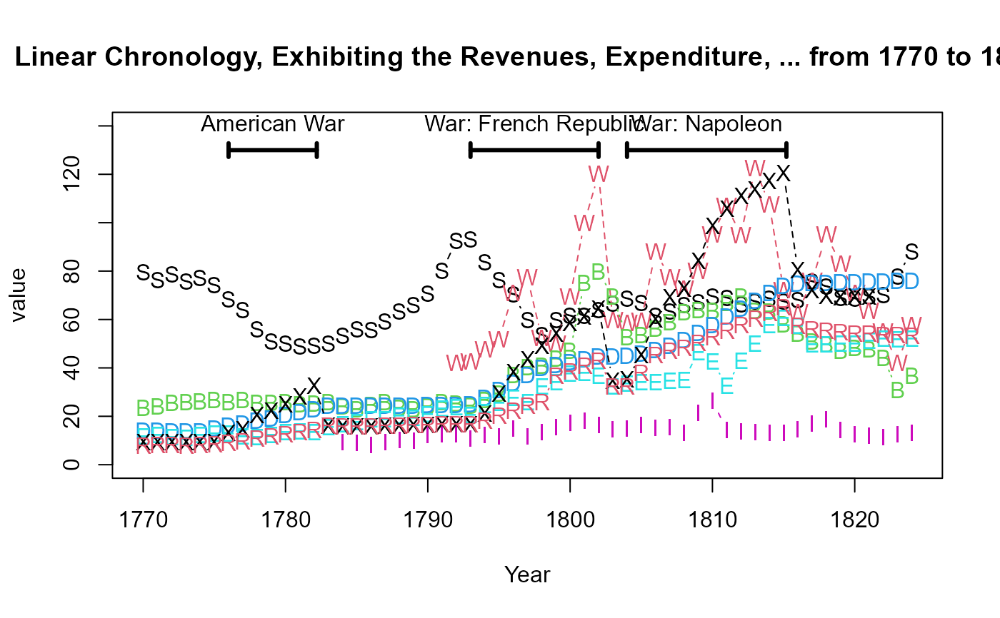

Data from William Playfair's (1824) last graph, titled "Linear Chronology, Exhibiting the Revenues, Expenditure, Debt, Price of Stocks and Bread, from 1770 to 1824". The chart tracks multiple economic variables, including national debt, exports, imports, revenue, expenditure, the price of stocks, and the price of bread over a 154 year time span.
Usage
data("Playfair1824")Format
A data frame with 55 observations on the following 9 variables.
Yearnumeric, a numeric vector
StocksPrice of Stocks (Pounds per 3% consol bond), a numeric vector
WheatPrice of Wheat (Shillings per quarter), a numeric vector
BreadPrice of Bread (Farthings per quarter-loaf), a numeric vector
DebtNational debt (Tens of millions of pounds), a numeric vector
ExportsExports (Millions of pounds), a numeric vector
ImportsImports (Millions of pounds), a numeric vector
ExpenditureExpenditure (Millions of pounds), a numeric vector
RevenueRevenue (Millions of pounds), a numeric vector
Source
Ivan Lokhov, Remaking a 200-year-old chart https://www.datawrapper.de/blog/playfair-chronology-multiple-lines
Details
Playfair's 1824 chart is a pivotal work in the history of data visualization because it uses a multiple line graphs showing time series of economic indicators over time, with a fine appreciation of the complexity and directly labeled curves. The dataset, extracted from the image by Ivan Lokhov using WebPlotDigitizer, presents a challenge in trying re-create it, or do better using modern graphics methods.
References
Playfair, W. (1824). Chronology of Public Events and Remarkable Occurrences within the Last Fifty Years; or from 1774 to 1824, published by W. Lewis, Finch Lane, London.
The original chart can be seen on Wikimedia at: https://bit.ly/4ihX92a
Spence, I., Fenn, C. R., & Klein, S. (2017). Who is buried in Playfairs grave? Significance, 14(5), 20–23. doi:10.1111/j.1740-9713.2017.01071.x
Examples
data(Playfair1824)
str(Playfair1824)
#> 'data.frame': 55 obs. of 9 variables:
#> $ Year : num 1770 1771 1772 1773 1774 ...
#> $ Stocks : num 79.6 76.3 78.7 75.8 77.2 ...
#> $ Wheat : num NA NA NA NA NA NA NA NA NA NA ...
#> $ Bread : num 23.5 24.1 25.6 25.9 26.2 ...
#> $ Debt : num 14 14 13.7 13.7 13.7 ...
#> $ Exports : num 11.6 12.2 11.3 11 12.2 ...
#> $ Imports : num NA NA NA NA NA NA NA NA NA NA ...
#> $ Expenditure: num 9.21 9.21 9.22 9.22 9.23 ...
#> $ Revenue : num 7.72 8.03 8.03 7.74 8.04 ...
# Plot multiple time series with matplot()
matplot(Playfair1824$Year, Playfair1824[, -1],
pch = c("S", "W", "B", "D", "E", "I", "X", "R"),
type = "b",
xlab = "Year",
ylab = "value",
ylim = c(0, 140),
main = "Linear Chronology, Exhibiting the Revenues, Expenditure, ... from 1770 to 1824")
# main events
events <- data.frame(
start = c(1776, 1793, 1804),
end = c(1782.2, 1802, 1815.2),
event = c("American War", "War: French Republic", "War: Napoleon")
)
with(events, {
arrows(x0 = start, x1 = end,
y0 = 130, y1 = 130,
lwd = 3,
code = 3,
angle = 90, length = 0.05)
text((start+end)/2, 132, event, pos = 3)
})
